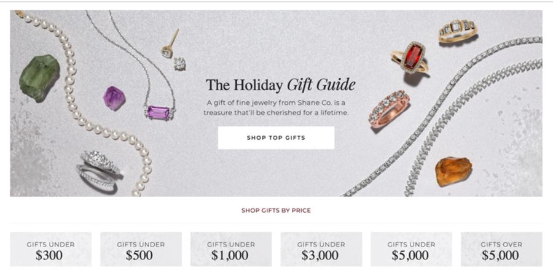

Holiday Customer Journey Optimization (Gift Guide)
- Role: Lead UX Researcher
- Scope: Holiday ecommerce journey and Gift Guide experience
- Methods: Journey analysis, quantitative behavioral analysis, competitive analysis
- Impact: Reduced customer looping behavior from 26.1% to ~6% during peak season
Context
During the holiday season (Thanksgiving through Christmas), I regularly monitored key behavioral and journey metrics to evaluate the effectiveness of our ecommerce and marketing efforts. One critical focus area was how customers navigated the site during high-intent gifting moments, particularly within the Gift Guide experience.
Gift Guides represent a high-traffic, high-revenue entry point during the holiday season, making usability issues especially costly.
Problem Identification
Early in the holiday period, journey analysis revealed a significant navigation breakdown:
- 26.1% of users on the Gift Guide navigated back to the Gift Guide via the main navigation
- Session recordings and click data showed customers repeatedly looping to the same page
- This behavior indicated confusion, friction, and stalled progression in the shopping journey
Research & Hypothesis
I analyzed click behavior, page interaction patterns, and segmented user flows to understand why customers were looping.
Hypothesis: The Gift Guide page closely resembled the homepage—especially above the fold—causing users to misidentify their current location. As a result, customers attempted to “navigate” to the Gift Guide even when they were already there.

Design Strategy & Rapid Iteration
Given the time sensitivity of the holiday season, I partnered closely with Digital Design to develop and deploy a fast, research-informed solution.
- Conducted a lightweight competitive analysis of Gift Guides across ecommerce sites to identify effective patterns
- Identified category-driven collections as a common and effective way to orient shoppers
- Redesigned the above-the-fold Gift Guide experience to clearly differentiate it from the homepage
- Introduced more explicit gifting categories to support exploration and reduce ambiguity
Wireframes were created quickly to align on layout and content hierarchy before implementation.
Results & Business Impact
Following deployment of the updated Gift Guide:
- Customer looping behavior dropped from 26.1% to approximately 6%
- Users were able to progress more effectively into category and product exploration
- Reduced friction during a critical revenue-driving period
Lead Researcher Contribution
- Proactively identified a high-risk journey issue during peak season
- Used behavioral analytics to diagnose confusion and validate hypotheses
- Balanced research rigor with speed to meet holiday timelines
- Influenced design decisions through competitive and journey-level insights